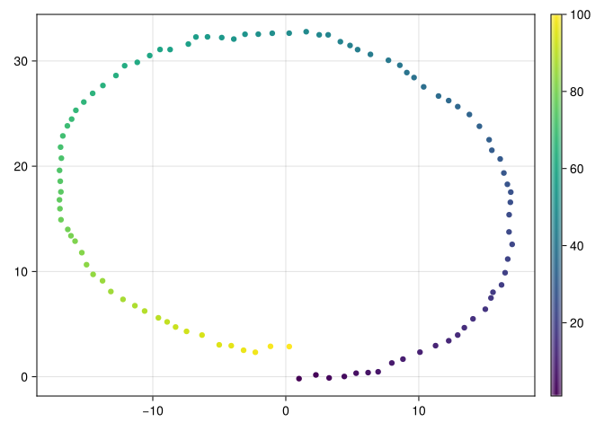
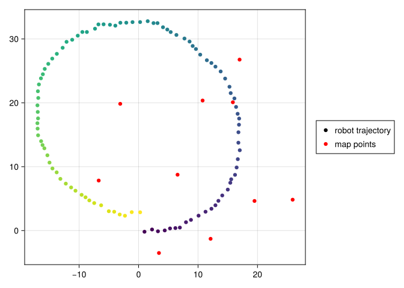
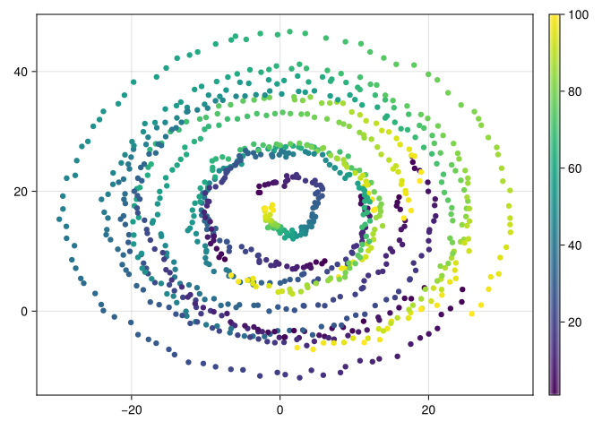
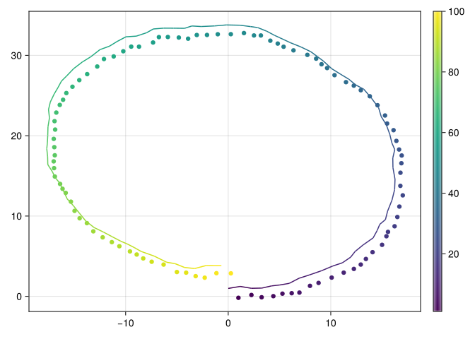
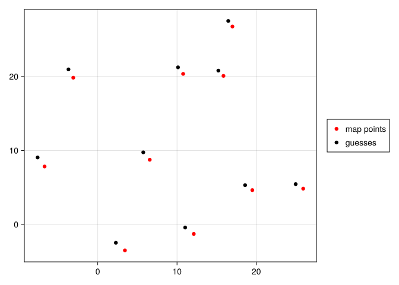

using LinearAlgebra, SparseArrays, RecursiveArrayTools, Distributions, Unzip, ExtendableSparse, ForwardDiff, DiffResults, AppleAccelerate, CairoMakieCairoMakie.enable_only_mime!("svg")For a robot to navigate autonomously, it needs to learn both its own location, as well as the locations of any potential obsticles around it, given its sensors’ observations of the world. We’ll create a probabilistic model of our environment and get a MAP estimate of these unknown quantities.
- Let \(x_t \in \mathbb{R}^2\) be the robot’s location at time \(t\).
- Let \(θ_t \in \mathbb{R}\) be the robot’s heading angle at time \(t\).
- Let \(m_i \in \mathbb{R}^2\) be the position of the \(i\)th obstacle.
- Let \(o_{t, i} \in \mathbb{R}^2\) be our robot’s noisy observation of its distance at time \(t\) to obstacle \(i\).
Motion Model
We will assume that the robot advances approximately one step forward (in its local coordiante system) at each timestep. Let \(R(\theta)\) be a rotation matrix that converts coordinates in the \(\theta\)-rotated coordinate frame to global coordinates
\[ p(x_t | x_{t-1}) = \mathcal{N}\left(x_{t-1} + R(\theta_{t-1}) \begin{bmatrix} 1 1 \end{bmatrix}, \sigma^2_x I\right) \]
We also assume that the heading angle increases by approximately \(2\pi/100\) radians each step, so that \(p(\theta_t | \theta_{t-1}) = \mathcal{N}(\theta_{t-1} + \frac{2\pi}{100}, \sigma^2_θ)\). Let
\[ y_t = \begin{bmatrix} x_t \theta_t \end{bmatrix} \]
combine the location and heading parameters, and \(y\) be the vector of all the \(y_t\). In the code that follows, Gaussian distributions will be represented by their mean and covariance parameters. For reasons we’ll see later on, it will be easiest to express the mean at time \(t\) by indexing into \(y_{t-1}\).
Σ_x = Diagonal(fill(0.05, 2))2×2 Diagonal{Float64, Vector{Float64}}:
0.05 ⋅
⋅ 0.05μ_θ(y, θ) = y[θ:θ] + fill(2π/100, 1)μ_θ (generic function with 1 method)Σ_θ = 0.0080.008rot(t) = [cos(t) -sin(t); sin(t) cos(t)]rot (generic function with 1 method)μ_x(y, x, θ) = y[x] + rot(y[θ]) * [1.0,0.0]μ_x (generic function with 1 method)start = zeros(3)3-element Vector{Float64}:
0.0
0.0
0.0Simulating the Model
Let’s simulate a robot trajectory that obeys this motion model for \(T\) timesteps. We’ll try to reconstruct this trajectory with a maximum likelihood approach in the next section.
T = 100100mean_step(y) = [μ_x(y, 1:2, 3); μ_θ(y, 3)]mean_step (generic function with 1 method)Without noise, the robot’s trajectory would look like this, with the color changing from black to yellow over time.
yhat = VectorOfArray(accumulate((y,_)-> mean_step(y), 1:T; init=start))VectorOfArray{Float64,2}:
100-element Vector{Vector{Float64}}:
[1.0, 0.0, 0.06283185307179587]
[1.9980267284282716, 0.06279051952931337, 0.12566370614359174]
[2.9901414297427493, 0.18812375309361762, 0.1884955592153876]
[3.972428680471438, 0.3755050676793422, 0.25132741228718347]
[4.941011841600069, 0.624194954844197, 0.3141592653589793]
[5.892068357895223, 0.9332119492191444, 0.37699111843077515]
[6.821844843783475, 1.3013365019038223, 0.439822971502571]
[7.726671896249494, 1.727115793468895, 0.5026548245743668]
[8.602978576293358, 2.20886946757061, 0.5654866776461627]
[9.447306501795373, 2.7446962625496067, 0.6283185307179585]
⋮
[-7.602978576293377, 2.208869467570511, 5.780530482605213]
[-6.726671896249516, 1.7271157934687904, 5.843362335677009]
[-5.8218448437834995, 1.3013365019037118, 5.906194188748804]
[-4.89206835789525, 0.9332119492190273, 5.9690260418206]
[-3.941011841600099, 0.6241949548440728, 6.031857894892395]
[-2.9724286804714697, 0.3755050676792106, 6.094689747964191]
[-1.9901414297427826, 0.18812375309347806, 6.157521601035986]
[-0.9980267284283059, 0.06279051952916548, 6.220353454107782]
[-3.4861002973229915e-14, -1.566524687746096e-13, 6.283185307179577]let f1 = Figure()
ax1 = f1[1, 1] = Axis(f1)
p1 = plot!(yhat[1, :], yhat[2, :], color=1:T)
Colorbar(f1[1,2], p1)
f1
end
But as we’ve assumed some noise at each step, the true trajectory is a little more wiggly.
step(y) = [rand(MultivariateNormal(μ_x(y, 1:2, 3), Σ_x)); rand(Normal(μ_θ(y, 3)[1], Σ_θ))]step (generic function with 1 method)true_y = VectorOfArray(accumulate((y,_)-> step(y), 1:T; init=start))VectorOfArray{Float64,2}:
100-element Vector{Vector{Float64}}:
[0.9948369008080734, -0.17881455800404114, 0.06813995060080176]
[2.2627930974742254, 0.17186151904112557, 0.12975149463685665]
[3.2577831373702573, -0.10985759933358524, 0.1829090984073673]
[4.400490027838276, 0.025835244482602535, 0.2454353075657262]
[5.287719367549745, 0.33742069041111256, 0.33541549600906045]
[6.189569042596519, 0.3940744827551949, 0.4010285171119553]
[6.9437488500664895, 0.4715841172952981, 0.45651471287207906]
[7.972843771064869, 1.3090087381507867, 0.5219706310461045]
[8.80959728633984, 1.6739948567368281, 0.6084779835161396]
[10.08790868778338, 2.3364002859826782, 0.6766190544277169]
⋮
[-8.286488651409167, 4.725160020949448, 5.858871709439354]
[-7.462292377502831, 4.310271190958247, 5.92407834074762]
[-6.299206837132079, 3.9592901447036657, 5.989198227579204]
[-5.0048292897616315, 3.031484767839803, 6.051276214969418]
[-4.101678423979381, 2.951706786370477, 6.115026977729722]
[-3.174101632699504, 2.518573445277533, 6.184476993977584]
[-2.2918628875042364, 2.3265372408595124, 6.242626128695027]
[-1.1511843642951767, 2.8874967492862282, 6.313806498956315]
[0.26107996338269074, 2.8672711545305583, 6.374629526124709]let f1 = Figure()
ax1 = f1[1, 1] = Axis(f1)
p1 = plot!(true_y[1, :], true_y[2, :], color=1:T)
Colorbar(f1[1,2], p1)
f1
end
Obstacle Location Prior
We will assume an uninformative prior over the locations of our \(k\) potential obstacles \(m\): \(m_i \sim \mathcal{N}(0, \Sigma_m)\). For consistency with the earlier mean method defined for positions \(x\), the mean function for obstacles will take a dummy argument.
k = 1010μ_m(_) = fill(10, 2)μ_m (generic function with 1 method)Σ_m = Diagonal(fill(100, 2))2×2 Diagonal{Int64, Vector{Int64}}:
100 ⋅
⋅ 100true_m = rand(MultivariateNormal(μ_m(nothing), Σ_m), k)2×10 Matrix{Float64}:
6.55633 25.9119 10.7696 -3.08722 … 19.4976 3.42704 -6.70656
8.74785 4.83715 20.3582 19.8423 4.63834 -3.50851 7.83388let f1 = Figure()
ax1 = f1[1, 1] = Axis(f1)
p1 = plot!(true_y[1, :], true_y[2, :], color=1:T, label="robot trajectory")
plot!(true_m[1, :], true_m[2,:], color=:red, label="map points")
f1[1,2] = Legend(f1, ax1)
f1
end
Let \[ z = \begin{bmatrix} y m \end{bmatrix} \] combine the ego and obstacle parameters.
true_z = [vec(true_y); vec(true_m)]320-element Vector{Float64}:
0.9948369008080734
-0.17881455800404114
0.06813995060080176
2.2627930974742254
0.17186151904112557
0.12975149463685665
3.2577831373702573
-0.10985759933358524
0.1829090984073673
4.400490027838276
⋮
20.087161874125705
16.98673666207452
26.761324025474323
19.497590609511285
4.638343755581045
3.427042183951291
-3.5085063520697517
-6.706558668864389
7.833875387182863Observation Model
Let \(p(o_{t, i} | x_t, θ_t, m_i) = \mathcal{N}(R(-θ_t)(m_i - x_t), Σ_o)\), so that the robot’s sensor tells it approximately how close each map point is in its local coordinate frame.
μ_obs(z, x, θ, m) = rot(-z[θ]) * (z[m] - z[x])μ_obs (generic function with 1 method)Σ_obs = Diagonal(fill(0.1, 2))2×2 Diagonal{Float64, Vector{Float64}}:
0.1 ⋅
⋅ 0.1obs = VectorOfArray([VectorOfArray([
rand(MultivariateNormal(μ_obs(true_z, 3t+1:3t+2, 3t+3, (3T+2m+1):(3T+2m+2)), Σ_obs)) for m in 0:(k-1)]) for t in 0:(T-1)])VectorOfArray{Float64,3}:
100-element Vector{VectorOfArray{Float64, 2, Vector{Vector{Float64}}}}:
VectorOfArray{Float64, 2, Vector{Vector{Float64}}}([[6.013700145086878, 8.368164266295134], [24.568021744453933, 3.6157091049669656], [11.23778228240714, 19.222792500273055], [-2.7040300052210795, 19.792162726658354], [11.250628280481457, -1.6887668931377868], [16.027211901569483, 19.032850002087653], [17.778324286305484, 25.8465606216527], [19.441293019621643, 3.8879295067523945], [1.8809069271553998, -3.251827387382284], [-7.432381353009933, 8.645019960045108]])
VectorOfArray{Float64, 2, Vector{Vector{Float64}}}([[5.641985228875032, 7.924150333390872], [24.474762791025697, 1.5399668441475096], [10.896505350585308, 19.14184066164264], [-2.8898071407213397, 19.79983657318185], [9.749145325474837, -3.2938891127184835], [15.803316027431402, 18.16650234550198], [17.878814119398438, 24.86620332021086], [17.671848850537003, 2.078932762216099], [0.5769536724566005, -4.355619037474067], [-8.207967964723636, 8.985428046601001]])
VectorOfArray{Float64, 2, Vector{Vector{Float64}}}([[4.851631808665426, 8.188085448607072], [22.948895587595022, 0.43775846135747726], [11.005179454038947, 18.59536299257642], [-2.805042873203761, 20.84842826750874], [8.505294699591524, -2.6997322648621034], [15.70012657408447, 17.572421151893366], [18.128916953436377, 23.834553381464215], [16.780208160819445, 2.1368667977760416], [-0.7400891037317023, -3.417356665861245], [-7.912720993040339, 9.534565325810163]])
VectorOfArray{Float64, 2, Vector{Vector{Float64}}}([[4.048231394317695, 7.721987916874405], [21.71834476032371, -0.5659096212098226], [10.88881162981954, 17.926602832838835], [-2.042645731965736, 21.06910413938711], [7.006996582086496, -2.8700125188555052], [16.18457477434436, 16.97570115207072], [18.80072063154177, 23.462534798530292], [16.021686390387767, 0.5784537452527012], [-1.6102837184467977, -3.530878884865166], [-8.539929896505848, 10.424353745640826]])
VectorOfArray{Float64, 2, Vector{Vector{Float64}}}([[3.63090613235886, 7.550792587951964], [21.19886142760244, -2.899881179137308], [11.445282614446857, 16.829170336602218], [-1.5711220247939073, 21.216618198260317], [5.9946431651363925, -4.22151707487656], [16.84201289628381, 15.135162281477065], [19.897419903902616, 21.509982311505958], [14.812395117449746, -0.30171320319528583], [-2.9705849900207686, -3.0753253031980003], [-9.351472933012097, 11.256286706657121]])
VectorOfArray{Float64, 2, Vector{Vector{Float64}}}([[4.1567292874234045, 7.217876989269879], [20.031530259147335, -3.805016511339554], [11.805343841699973, 17.15847024793535], [-0.9494894059627843, 21.411926277598948], [5.269723616963123, -4.028733124369017], [16.758682983305825, 14.14696720211139], [19.959509571468296, 19.99039322133718], [13.224448152122887, -1.0309267036091796], [-3.5222001411460484, -2.6497070522637056], [-8.954298046447112, 11.774280435000888]])
VectorOfArray{Float64, 2, Vector{Vector{Float64}}}([[3.1741880442516948, 7.278860356736828], [18.87521422440231, -4.472497094503896], [11.800325404846303, 16.295369409287265], [-0.7171437115541555, 21.53254662271214], [3.2856046187068175, -3.370560611170286], [16.310533683090117, 13.617389923037623], [20.89472387664705, 18.705680477004066], [13.365791953957965, -1.495587523708471], [-4.7323986077301425, -2.4427779029098704], [-8.882759283217794, 12.533620977684915]])
VectorOfArray{Float64, 2, Vector{Vector{Float64}}}([[2.0425556099387574, 7.066129125669452], [17.598079572324643, -5.502543567288933], [12.075143487583459, 15.85152134744959], [-0.5393243431996848, 21.469407020903695], [2.561477443413501, -4.446991446491485], [16.082759754634296, 11.83419562578087], [20.822299827955526, 17.644956151132828], [11.718433710022705, -3.14677933192268], [-6.66235093454659, -1.8072160990252237], [-9.750416360283822, 12.359686401888242]])
VectorOfArray{Float64, 2, Vector{Vector{Float64}}}([[2.2816570565727656, 7.383041195033532], [15.808228099440342, -7.550027191654502], [11.507667669820282, 13.967166455229231], [0.5884347133759719, 20.86134703635186], [0.6756153569732424, -4.340809047211794], [16.47356421296756, 11.108958142749307], [20.95613108347853, 15.883372806979661], [10.563130717995497, -3.468325849068952], [-7.146941348087052, -0.4041440353753609], [-9.24822537609671, 13.702260824489597]])
VectorOfArray{Float64, 2, Vector{Vector{Float64}}}([[1.6793343967549705, 7.036795779767694], [13.360779749114423, -7.9647506399299255], [11.236228718586213, 13.969091821537623], [1.0391408118453676, 21.900876838648326], [-0.10684530555668281, -4.395463121679125], [15.140171375134607, 9.934715867253184], [20.712718472833604, 15.052217576577188], [9.145744140662826, -4.081860230417136], [-8.923938796838996, -0.11272085563531176], [-9.413796486221301, 14.94540366680314]])
⋮
VectorOfArray{Float64, 2, Vector{Vector{Float64}}}([[11.895435519097228, 10.096250080587007], [30.975050523300183, 14.45443709898133], [11.135232297052879, 22.64729705590045], [-1.71080986823068, 15.406779695838383], [20.658265969190452, 3.838088694804081], [15.233762630418745, 23.734209497280688], [13.698979348814278, 30.149769005198372], [24.84130959192779, 11.402516186176626], [13.913990328907596, -3.308575062072246], [0.2700971701232535, 3.3249075529248797]])
VectorOfArray{Float64, 2, Vector{Vector{Float64}}}([[11.544045405312193, 9.06021770042106], [31.029513316602163, 13.163344230056122], [11.58933285912982, 21.653482692182195], [-1.3537117605130766, 16.097935654330694], [20.358796399141443, 1.6629414343363025], [15.91514387742586, 23.2570196053237], [14.649109298607984, 29.916763958813313], [25.45425630262209, 10.045359892816323], [13.294676732727366, -2.963936492473572], [-0.25029973900567865, 3.1924000111842177]])
VectorOfArray{Float64, 2, Vector{Vector{Float64}}}([[11.045652254232264, 8.619982301082722], [30.477238913040956, 10.674471999285572], [11.291262593919816, 20.782892126283105], [-1.9471137886124064, 15.816602347816609], [19.128166048454982, 0.45362865668916885], [16.40449799707704, 21.75446187297804], [15.68190718601276, 28.832763883748935], [23.68335834622055, 8.045926400443612], [11.841980930405585, -4.5323125356999405], [-1.4837503894146615, 4.237739513970863]])
VectorOfArray{Float64, 2, Vector{Vector{Float64}}}([[9.864512396788715, 8.174355969610168], [29.64109550471643, 8.94464529078981], [11.74909722916652, 21.083713859941614], [-2.1196222870955834, 17.16313205691649], [17.584766293952026, -0.26954654517960586], [16.328243760948826, 21.16344789096051], [16.16578259093745, 27.811516254603013], [23.541726969840862, 6.837205505173892], [9.827960898326841, -4.52230863369103], [-3.685379588831624, 4.64562622457701]])
VectorOfArray{Float64, 2, Vector{Vector{Float64}}}([[9.335691826213935, 7.607209026495554], [29.45240430760495, 6.21606512830997], [11.90890616348594, 19.66088439355682], [-2.0329608490032243, 16.705853074573707], [17.288944713096615, -1.16570411797972], [16.891583909028103, 20.100892575353356], [17.403731679617888, 27.02663611787579], [23.672802301167607, 5.45259331883669], [8.604313192351126, -5.224359270684223], [-3.247508519731462, 4.092589703568361]])
VectorOfArray{Float64, 2, Vector{Vector{Float64}}}([[8.919742708155354, 7.245067771309988], [28.36992146744046, 5.723139469478966], [12.390020064954982, 18.64410819705427], [-1.151716565306933, 17.289944341814728], [15.000327482057703, -1.7008403954528681], [16.959186573295256, 19.620865492493625], [17.7002432735754, 26.018009499617758], [22.862309288611925, 4.881388901683297], [7.233238624850517, -5.320660824135512], [-3.636429232574335, 5.438673018619582]])
VectorOfArray{Float64, 2, Vector{Vector{Float64}}}([[8.279106326855326, 7.149463899354719], [28.091268735912287, 3.6646525160383265], [12.207777477591296, 18.55169023921717], [-1.0393831156839681, 17.730881363829212], [14.462496539724393, -2.9068150158810058], [17.29448503387057, 18.55333657403531], [18.116942128466697, 25.877334959834457], [21.801692311606093, 2.6985815160041837], [5.865153526042226, -5.294348183788221], [-4.383202346059136, 5.140777560712807]])
VectorOfArray{Float64, 2, Vector{Vector{Float64}}}([[7.871969763556479, 5.693281179819593], [27.079311433478527, 1.0222543664256254], [12.829613327905994, 17.009600131285378], [-0.9388450513507693, 16.854425667022767], [13.432432475396185, -4.764050539289802], [17.64484260642448, 16.789186893496602], [18.992102332827866, 23.22148939098534], [21.136826483389267, 0.9763542938789962], [4.451279536187137, -6.384753657386503], [-5.609142471465136, 4.931707956247374]])
VectorOfArray{Float64, 2, Vector{Vector{Float64}}}([[6.739357850166455, 5.314592282275178], [25.824003013561565, -0.44346792418659314], [12.613184509356499, 16.829002244521998], [-1.9804481682466397, 17.148558489846486], [11.331549703798766, -5.239902906708373], [16.671274647209334, 15.523578816652083], [18.808836993675946, 21.73238749095739], [18.961881301347855, 0.29836699013508333], [2.304305953590278, -6.099487027629671], [-6.608484484768158, 5.967973441682578]])The following plots our observations over time, from black at the start to yellow at time \(T\). The swirling shape comes from the fact that the robot spins as it moves.
let f = Figure()
ax = f[1, 1] = Axis(f)
for i in 1:k
p1 = plot!(obs[1,i,:], obs[2, i,:], color=1:T)
if i == 1
Colorbar(f[1,2], p1)
end
end
f
end
Guessing an Initial Trajectory
We’ll start out with our guess \(\hat{y}\) as the mean of the motion model. We’ll guess \(\hat{m}\) by just sampling from the prior.
mhat = rand(MultivariateNormal(μ_m(nothing), Σ_m), k)2×10 Matrix{Float64}:
9.77342 3.92698 14.6207 … 27.3042 -4.2041 8.7704 10.2939
-0.432306 3.51201 -0.757796 4.7226 8.80291 1.73778 25.5637zhat = [vec(yhat); vec(mhat)]320-element Vector{Float64}:
1.0
0.0
0.06283185307179587
1.9980267284282716
0.06279051952931337
0.12566370614359174
2.9901414297427493
0.18812375309361762
0.1884955592153876
3.972428680471438
⋮
4.6246080767284585
27.30417657249438
4.722597230875135
-4.204101557016603
8.80290626371208
8.770396239663455
1.7377838203908151
10.293861660079147
25.5637364438413Assembling Trajectory Probability
The negative joint log density of our guess and observations \(L(y, m)\) is a sum of factors \(L_i = (v_i - μ_i(z))^TΛ_i(v_i - μ_i(z))\) for different variables \(v_i\) with means \(\mu_i\) and precisions \(\Lambda_i\). The following code assembles these factors for the observation model above.
start_x(_) = [0., 1.0]start_x (generic function with 1 method)start_θ(_) = fill(2π/100, 1)start_θ (generic function with 1 method)Maximizing Trajectory Probability
We know \(L_i(z) = -f_i(z)^T\Lambda_i f(z)\) where \(f_i\) is a potentially nonlinear transformation of \(z\). Taylor expand \(f_i(z) \approx f_i(\hat{z}) + J_i\Delta\) where \(\Delta = z - \hat{z}\) and \(J_i = \nabla_z f_i(\hat{z})\). Substitute this expression in definition of \(L_i\) giving \(L_i(z) \approx \Delta^T H_i\Delta + 2 b_i^T\Delta + c\), where \(H_i = J_i^T\Lambda_i J_i\) and \(b_i = J_i^T\Lambda_i f_i(\hat{z})\). When add up all these factors to get the full log probability, we get \(\Delta^T H \Delta + 2 b^T \Delta + c\) where \(b\) is the sum of the \(b_i\) and \(H\) is the sum of the \(H_i\).
To minimize this quantity, take the derivative. We find that \(L\) will be approximately minimized when \(H\Delta = -b\) or \(\Delta = -H^{-1}b\). It remains to solve for \(\Delta\) and modify \(z\) appropriately. Repeating this gives the Gauss Newton algorithm.
When \(f\) is not well approximated by its first order Taylor expansion, instead of solving \(H^{-1}b\), it works better to solve the smoothed version \((H + \lambda \text{Diag}(H))^{-1}b\), where \(\lambda\) is a factor that gets slowly lowered to zero as \(z\) nears its optimal value. This is the Levenberg-Marquardt algorithm.
Understanding log_prob_builder
The log_prob_builder function above has two forms, depending on its jac argument. If jac=true, the function builds a vector of terms \(H_i\) and \(b_i\) described above. Othewise, it builds a vector of the negative log probabilities \(L_i\).
const QuadformBuilder = Vector{Tuple{<: ExtendableSparseMatrix, Vector}}Vector{Tuple{ExtendableSparseMatrixCSC, Vector}} (alias for Array{Tuple{ExtendableSparseMatrixCSC, Array{T, 1} where T}, 1})
These terms are computed by the factor function, which assembles \(H\) and \(b\) out of \(f_i(z)\) and its jacobian \(J\).
factor(Λ, (fval,_)::Tuple{<:Any, Nothing}) = fval' * (Λ * fval)factor (generic function with 1 method)function factor(Λ, (fval, J))
ΛJ = Λ * J
b = (ΛJ)' * fval
H = J' * ΛJ
(ExtendableSparseMatrix(H), b)
endfactor (generic function with 2 methods)Finally, we compute \(f_i(z)\) and its Jacobian using the following wrappers around the sparse_jac function, which computes a function and its sparse Jacobian.
Handling Sparsity
To define the sparse_jac function, we’ll wrap the jacobian function from the ForwardDiff library.
function sparse_jac(f, z, support, outs; jac=true)
jac || return f(z), nothing
M = nothing
fz = nothing
function f_wrapper(z_sup)
newz = collect(eltype(z_sup), z)
newz[support] .= z_sup
f(newz)
end
z_sup = z[support]
res = DiffResults.JacobianResult(zeros(outs), z_sup)
res = ForwardDiff.jacobian!(res, f_wrapper, z_sup)
J = DiffResults.jacobian(res)
M = ExtendableSparseMatrix(outs, length(z))
M[:, support] .= J
DiffResults.value(res), M
endsparse_jac (generic function with 1 method)function term(z, target, μ, outs, ixs...; jac=true)
support = [target; reduce(vcat, ixs; init=Int[])]
f(z) = z[target] - μ(z, ixs...)
sparse_jac(f, z, support, outs; jac)
endterm (generic function with 1 method)function obs_term(z, obs, ixs...; jac=true)
support = reduce(vcat, ixs; init=Int[])
f(z) = obs - μ_obs(z, ixs...)
sparse_jac(f, z, support, 2; jac)
endobs_term (generic function with 1 method)function log_prob_builder(z; jac=true)
bld = jac ? QuadformBuilder() : Vector{Float64}()
# We know the location distribution at time 1
push!(bld, factor(inv(Σ_x), term(z, 1:2, start_x, 2; jac)))
push!(bld, factor(inv(Σ_θ), term(z, 3:3, start_θ, 1; jac)))
# Add the Markovian jump probabilities at each step
for t in 1:(T-1)
ix = 3t+1
pix = 3(t-1)+1
push!(bld, factor(inv(Σ_x), term(z, ix:ix+1, μ_x, 2, pix:pix+1, pix+2; jac)))
push!(bld, factor(inv(Σ_θ), term(z, ix+2:ix+2, μ_θ, 1, pix+2; jac)))
end
# Add the prior on map components
for i in 0:(k-1)
ix = 3T+2i+1
push!(bld, factor(inv(Σ_m), term(z, ix:(ix+1), μ_m, 2; jac)))
end
# Add the observations
for t in 0:(T-1)
for i in 1:k
m = 3T+2(i-1)
ix = 3t+1
push!(bld, factor(inv(Σ_obs), obs_term(z, obs[:, i, t+1], ix:(ix+1), ix+2,(m+1):(m+2); jac)))
end
end
jac ? sum.(unzip(bld)) : sum(bld)
endlog_prob_builder (generic function with 1 method)function maximize_logprob(z; λ=1e-3, α=2, β=3, maxiter=100, eps=1e-4)
Δ = ones(length(z))
i = 0
prevL = log_prob_builder(z; jac=false)
L = 0.0
while any(abs.(Δ) .> eps) && i < maxiter
H, b = log_prob_builder(z; jac=true)
while true
Δ = (H + λ * Diagonal(H)) \ b
L = log_prob_builder(z - Δ; jac=false)
L >= prevL || break
λ *= β
end
z[:] .-= Δ
λ /= α
prevL = L
i += 1
end
println("Concluded after $i iterations")
z
endmaximize_logprob (generic function with 1 method)Running the Optimization
Here’s the negative log probability of the robot’s true trajectory.
log_prob_builder(true_z; jac=false)2082.4291845741Wereas here’s how likely our prior mean would be:
log_prob_builder(zhat; jac=false)4.293105704799155e6Running Levenberg-Marquardt gives us a solution that isn’t our true trajectory, but is technically more likely under the generative model above.
z_guess = maximize_logprob(copy(zhat))Concluded after 23 iterations320-element Vector{Float64}:
0.0034378099328569015
0.9914065354044322
0.04412767144911623
1.1616831781275363
1.2383383769126906
0.10251482279741249
2.26578807824746
1.006135883145371
0.15915735291351707
3.2835135446382417
⋮
20.80105806876392
16.461071406617254
27.51403449819456
18.585176469681425
5.309729223046708
2.28449550904925
-2.4762014943557835
-7.58331169017551
9.055115769823518log_prob_builder(z_guess; jac=false)1765.1322400328486Below, we plot the guessed trajectory as a line, with the true trajectory represented as a scatter plot.
y_guess = reshape(z_guess[1:3T], (3, T))3×100 Matrix{Float64}:
0.00343781 1.16168 2.26579 3.28351 … -3.27478 -2.14573 -0.667408
0.991407 1.23834 1.00614 1.03379 3.46532 3.84416 3.83187
0.0441277 0.102515 0.159157 0.223708 6.22054 6.30426 6.36082let f1 = Figure()
ax1 = f1[1, 1] = Axis(f1)
p1 = plot!(true_y[1, :], true_y[2, :], color=1:T)
lines!(y_guess[1,:], y_guess[2,:], color=1:T+1)
Colorbar(f1[1,2], p1)
f1
end
We ended up with a pretty good estiamte of the map points’ locations as well.
m_guess = reshape(z_guess[3T+1:end], (2, k))2×10 Matrix{Float64}:
5.74172 24.964 10.1238 -3.69083 … 18.5852 2.2845 -7.58331
9.74611 5.44817 21.2426 20.9662 5.30973 -2.4762 9.05512let f1 = Figure()
ax1 = f1[1, 1] = Axis(f1)
plot!(true_m[1, :], true_m[2,:], color=:red, label="map points")
plot!(m_guess[1, :], m_guess[2,:], color=:black, label="guesses")
f1[1,2] = Legend(f1, ax1)
f1
end